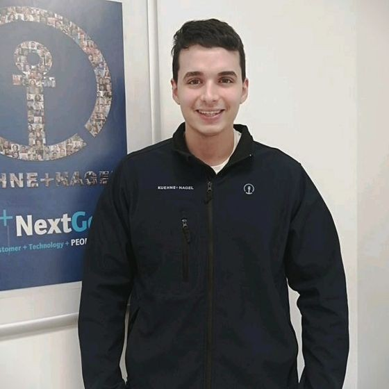

Jose Redondo Reina
Resumen:
Ingeniero con experiencia en gestión de proyectos en oficina técnica y logística, ahora buscando adentrarse en el fascinante mundo de la programación web. Con un ojo puesto en la inteligencia artificial para el futuro, estoy emocionado por explorar nuevas tecnologías y encontrar soluciones innovadoras. Siempre listo para aprender y enfrentar nuevos desafíos en este emocionante viaje profesional.
Educación:
- GRADO EN INGENIERÍA ELECTRONICA
INDSUTRIAL Y AUTOMÁTICA
- TÉCNICO SUPERIOR EN MECATRÓNICA
INDUSTRIAL
- BACHILLERATO CIENTIFICO TECNOLOGICO
Experiencia:
KUEHNE + NAGEL / 2022 - PRESENTE:
- Mejora de procesos logísticos aplicando técnicas
de lean manufaturing y six sigma.
- Creación de paneles en Tableau con desempeño
de los KPI ́s.
- Participación en auditorias internas y externas
en almacén de Airbus.
- Estudio y análisis de procesos , desarrollo de
proyectos, metodología 5s, análisis de flujos.
ENGINEERED FIRE PIPING S.L. /2020 - 2021
Trabajando en oficina técnica , realizando las
siguientes labores:
- Control de la producción
- Recursos humanos
- Mejora continua
-
PATENTES TALGO /2015 - 2016
Operario de mantenimiento de trenes, en la base
de mantenimiento de Fuencarral relizando
funciones tanto eléctricas como mecánicas.
Habilidades Adicionales
- Tableau
- HTML,CSS y Javascript
- Excel y macros VBA
- Procesos ETL
- Yellow Belt Six Sigma
Idiomas
- Español: Nativo
- Inglés: Intermedio